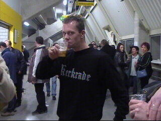
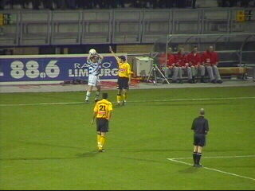

|
Roda JC - FC Zwolle (2-0) 29 november 2002 |
Bisschoppelijk College Broekhin Roermond !
Dit zijn de enthousiaste gasten achter de nieuwe
Roda-site Voerendaalfans.
De jubileum-editie van The Voice brak alle
verkoop-records.
Fotofrusty...
Reeds veel kersttuupe in het PLS.

Kerkrade-tuup.
Rugzijde.
Opmerkelijk spandoek.....
De gasten uit Zwolle.
Bij het begin van de wedstrijd werd het aftellen
kracht bijgezet door 10 superkanonslagen!
Scheidsrechter Van Beek trapt niet in deze
zwaluw van Anastasiou.
Lollypop.
Er was geen doorkomen aan de Zwolse defensie.
Cristiano ziet zijn schot van richting veranderd en
passeert zo doelman Van der Werff: 1-0 (58').
De nieuwe NORTH SIDE.

Sonko kopt in de 63e min. 2-0 binnen.

Ingooi Zwolle.
Ingooi recht op het hoofd van Sonkaya.
Een opstootje is het gevolg.
Oud-Rodaspeler Roelofsen.
Na de match is er een spectaculair vuurwerk.
Credits vuurwerk: Nick Marlow